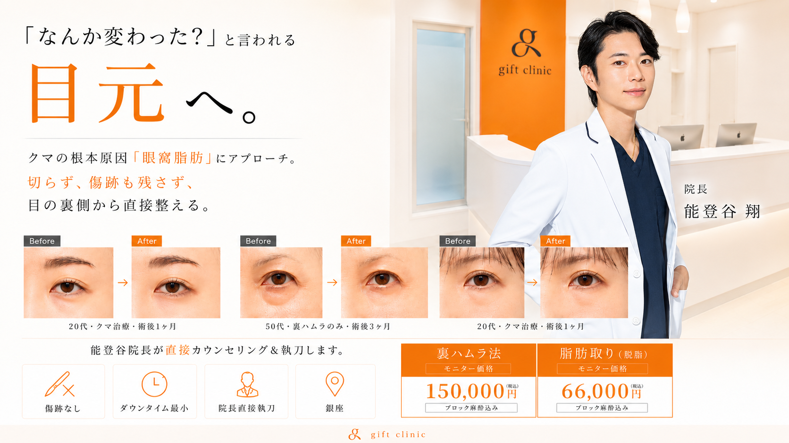
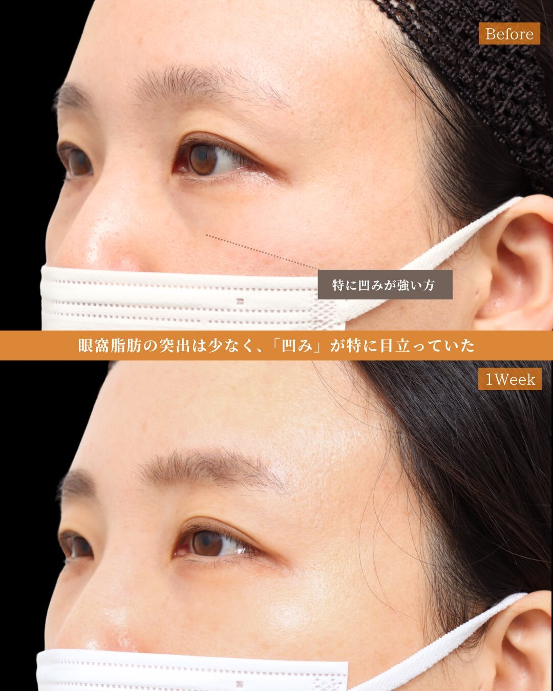
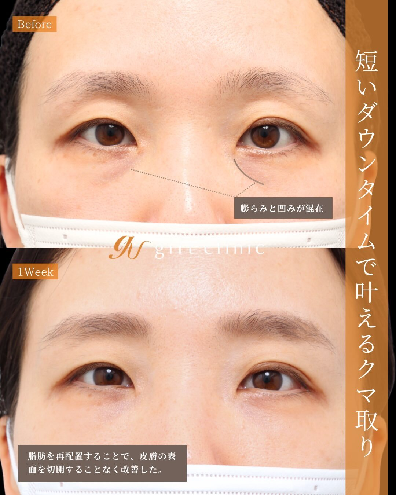
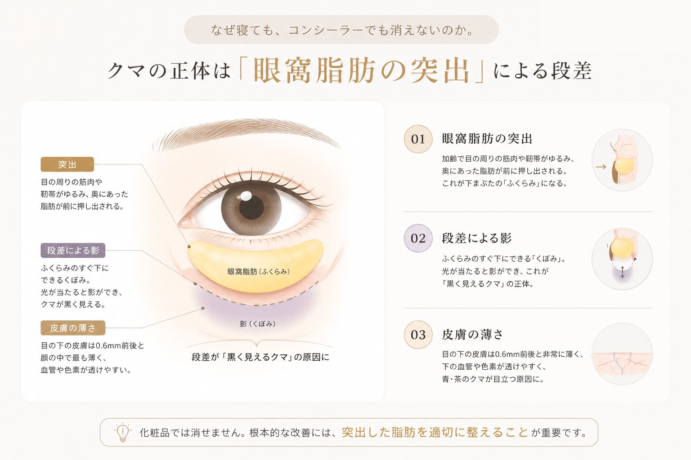
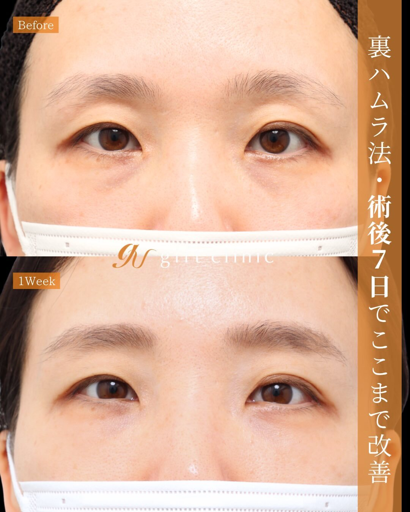
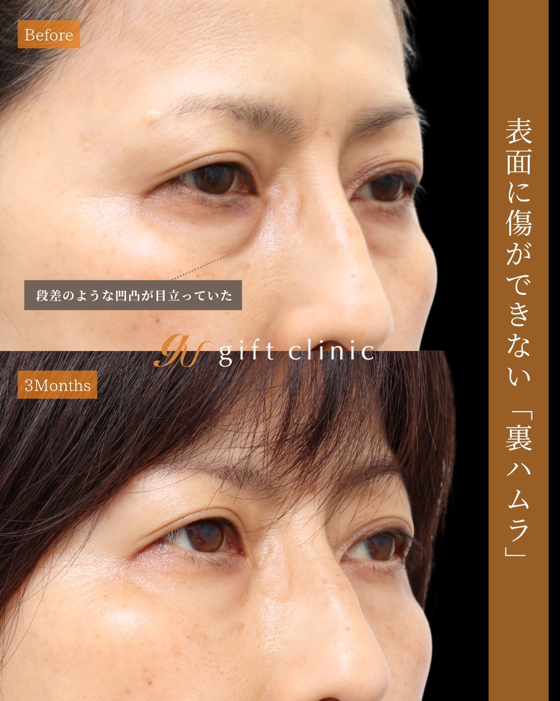
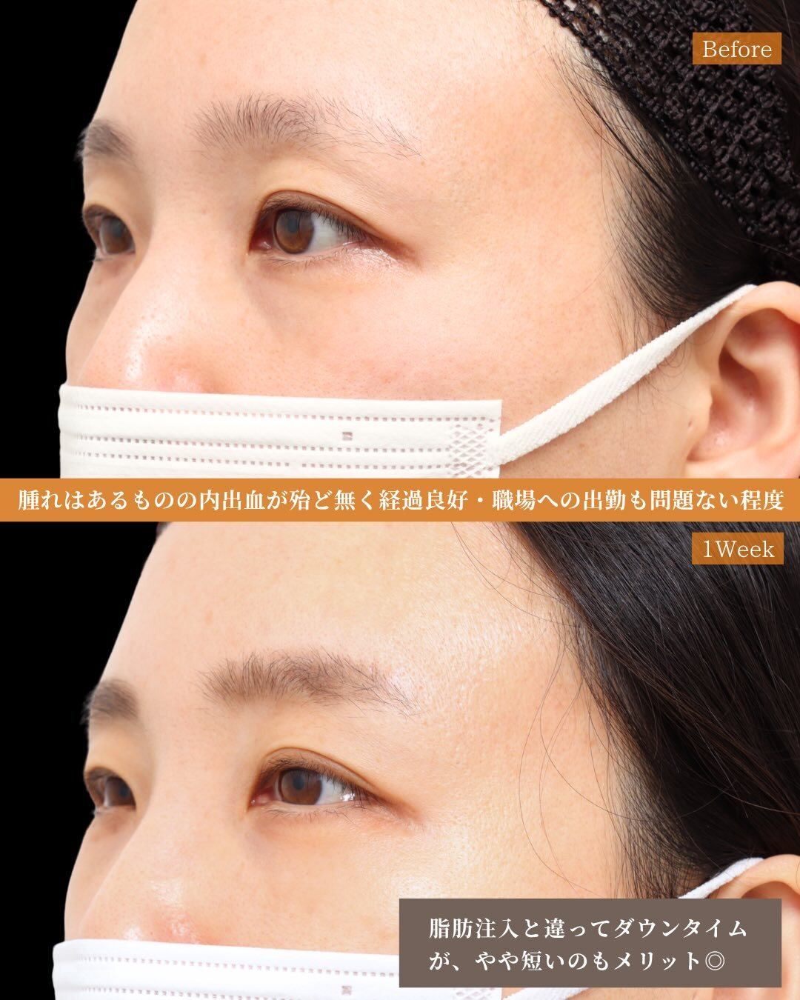
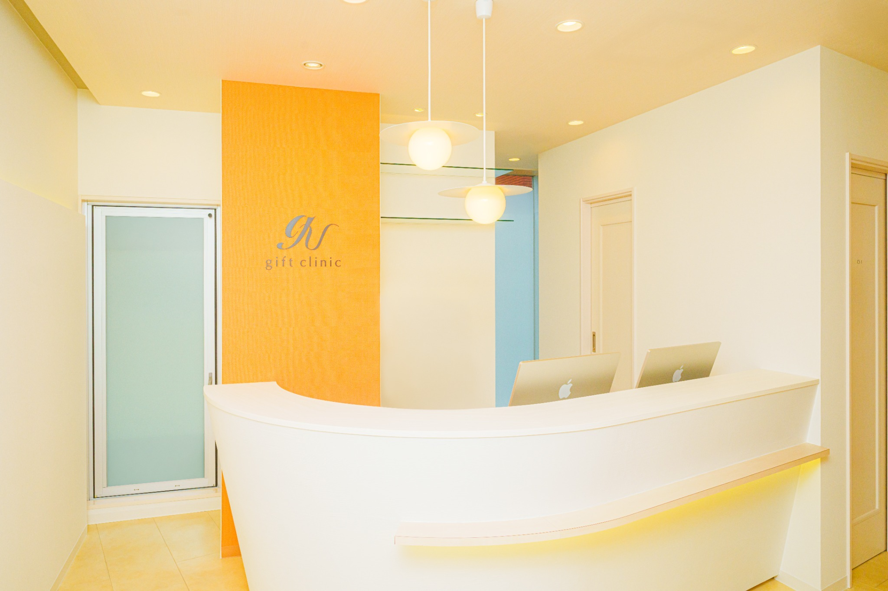

--
Days

裏ハムラ法は傷跡ゼロで
目の下の膨らみ・影・クマを
根本から解消する手術です。

BEFORE
AFTER裏ハムラ法｜30代女性
まぶたの裏側からアプローチするため、外側に一切傷跡が残りません。翌日から通常通りの生活が可能です。
研修医や助手が施術を行うことはありません。目元施術2,000件超のキャリアを持つ院長・能登谷翔が全例担当します。
初回カウンセリングは完全無料。その場での施術のご決断を求めることは一切ありません。まずはお気軽にどうぞ。
裏ハムラ法が通常¥300,000のところ、期間中は¥150,000でご提供。5月31日23:59をもって終了します。カウンセリングだけでも予約枠が残り僅かです。
クマには3つのタイプがあり、それぞれ原因と治療法が異なります。あなたのクマはどのタイプ？正確な診断が最短回復への第一歩です。

カウンセリングでタイプを確定し、最適な治療法をご提案します。
目の下の脂肪が膨らんで影になるタイプ。加齢や遺伝が原因で、スキンケアでは改善しません。
→ 裏ハムラ法で根本解決メラニン色素の沈着が原因。引っ張ると薄くなるのが特徴。脂肪取りとの組み合わせで対応可能。
→ 脂肪取り＋美白ケア血管が透けて見えるタイプ。冷えや疲労で悪化します。脂肪取りにより皮膚が厚みを取り戻します。
→ 脂肪取り＋レーザー当院で施術を受けた患者様の実際の術前・術後写真です。個人差があります。
カウンセリング無料・当日の決定不要・押し売りなし

BEFORE
AFTER
BEFORE初めての方も安心。カウンセリングから術後フォローまで丁寧にサポートします。
完全予約制のため待ち時間なし。プライベートな個室でお待ちください。
院長が直接診断。クマのタイプと最適プランをご提案します。
局所麻酔を使用。痛みに最大限配慮しながら進めます。
院長が直接執刀。丁寧・確実に施術を行います。
アフターケアは無料。LINEでいつでもご相談いただけます。
「クマで悩んでいる患者様の多くが、何年も諦めていた方々です。裏ハムラ法によって、その方の目元が劇的に変わる瞬間が私の原動力です。」
形成外科・美容外科で15年以上の臨床経験を積み、目元施術は累計2,000件超。全ての症例で院長が直接執刀します。

5月31日までのご予約で、裏ハムラ法が¥150,000（通常¥300,000）でご提供。
カウンセリングは完全無料、その場での施術決定は不要です。